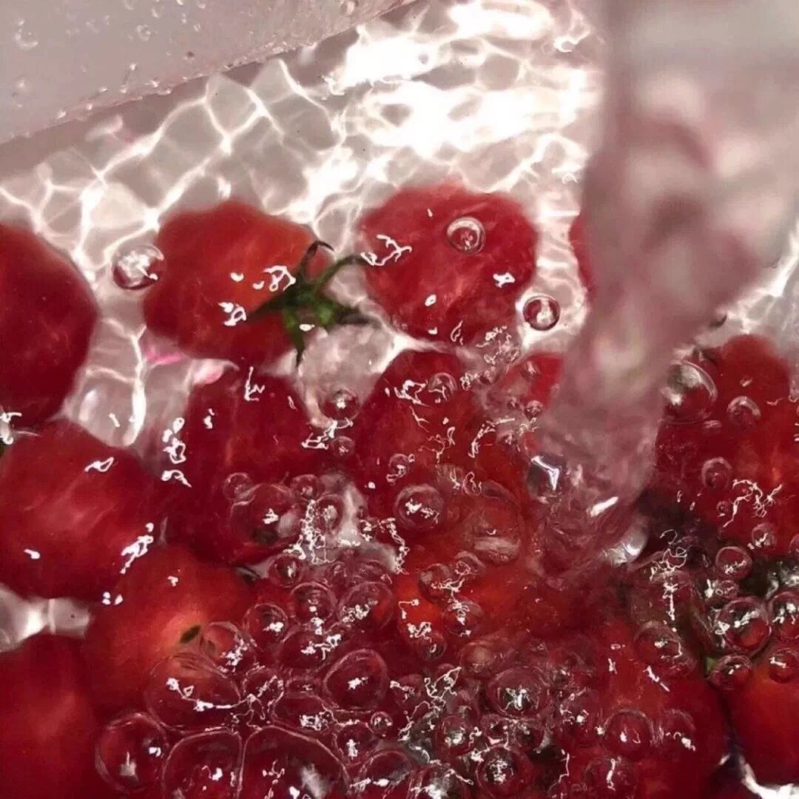

“从自卑到自信，普通女孩逆袭记”
和 我 一 起 治 愈 生 活

图：@网络
文：@秋秋
大家好，我是秋秋。
一直以为，我是一个特别自信的人，直到最近一年我才发现，其实我特别胆小。
比如公众号，我是在注册很久之后才发了第一篇文章。
毕业之后就开始做编导，但是我自己的号却半个月前才注册。

我经常会把身体的愉悦和自信混为一谈。
比如每天躺着玩手机、吃零食，日子过的舒坦心情不错，就把这当做自信，但其实这就是没有清晰认知的傻乐。

我第一次意识到我不自信的时候，是有次找工作的时候，从面试开始，对方就一直压低工资。
比如毕业不到一年，没经验...而我的气势，根本不值一提。
后来入职，我经常会用数据来质问自己，很害怕别人的目光，会因为外在的一点点评价进而觉得我能力不行。
而直到最近3个月状态越来越好，我才知道——真正的自信不是情绪的高涨，而是：
1.你不会轻易被别人评价
一开始，我做短视频编导，点赞不过5千我都会非常沮丧，沮丧到我一抬头，感觉所有的人都知道了我的数据，眼睛都长在我身上盯着我。
后来我才发现，别人随意的评价并不代表你的能力，只有你自己才能决定你。

所以之后数据不好的时候我都快速找方法。时间久了，别人对我的评价我没那么在意了，尤其负面的，不会影响到我的情绪和行动。
我才发现原来自己从前那样不过是自卑。
而如果现在你的父母、领导、老师说你什么，你非常在意、往心里去，那说明她们说的可能是对的。
没有能力更没有自信的时候，就是会非常在意别人的评价。
2.自信，才是你行动的开始

其实只有自信的人才会做很多事。我们会发现，大多数积极的人，才会愿意做更多的事，因为她们相信自己能够完成。
我以前写手帐，印象很深的一个评价是：你写这么多计划，能完成吗？
其实每天睡前看一小时书，每天抽空写写成功日记，每周出去玩一次并不是很难，但是只有你相信自己，才真正能做的到。
3.自信，你才会及时修正错误

当你发生比较负面的事情，你第一个想到的是什么？
我身上的一个例子。在我们公司做短视频的时候，我经常听到的一句话就是：现在做抖音还来得及吗？
说实话那时候刚毕业的我有被影响到。一直都没有认真做自己的公众号和抖音，就是因为我觉得我做什么都来不及了。
所以当你被负面情绪把控的时候，你会觉得什么都做不了了。当然，也许你还没严重到这种程度，但是你现在已经有点不敢尝试的时候，那你也要开始改变了。
说到这，大家肯定很好奇，究竟我是怎样一步步找到自信的。
我的方法也很简单：坚持写成功日记。
这个方法不是我创始的，了解我的人也知道我最近在学习理财，这个方法是《小狗钱钱》这本书里面的，而我只是真的去照做了而已。

（1）每天写下5件成功的事
刚开始也许你觉得很难，那就把这一天最高兴的3件事情写下吧。
你可以写你做的事情、看的书，再慢慢写下新尝试和正反馈。
比如我第一天写的时候，就写了我看了《小狗钱钱》的书，我真的写了成功日记等等。

每天都做，每次至少写3-5条你成功的事（任何小事都可以），这样坚持下去，你会看到神奇的力量。
（2）定时梳理你的成功日记，发现并且放大自己的优点
现在的我经常会翻阅我的成功日记。
我写了很多我在工作上被夸，在写作分享上的事，慢慢我发现我是一个爱分享，并能从中获得快乐的人。
给予别人力量，别人的反馈也会让我愉悦。

其实，人类的情感状态都分为4种：愉悦、不爽、愤怒、恐惧；而成功日记就是不断的放大你这种愉悦感。
通过这种愉悦感，你会不断的被满足，从而继续做这件事，不知不觉的你真的在这件事上花了1万小时时间，从而成为这个领域的“行家”。
所以写成功日记，不仅让你变的自信，也会让你发现你真正喜欢什么。
（3）除了成功日记，还有情绪日记

不断的去总结自己的负面情绪，也是获得自信的经验。
一是：记录下负面情绪，你会发现很多事情会自然而然的会过去，你的心胸会开阔。
二是：不断写下负面情绪的解决办法，下次遇到你就不会怕了。
比如我当时有一段时间不开心是因为房子距离公司太远，每天一想到要倒4班地铁上班顿时就不想起床，后来真正解决这件事是我下定决心搬家：
（1）我接受了房子没到期可能要赔付房东的违约金；
（2）我积极的联系看房，午休时间看了3家房源；
（3）说搬就搬，一个周末就解决了搬家问题；
（4）积极和房东沟通，最终提前找到入驻的房客，没赔违约金。
这些事的记录让给我发现，行动力、沟通都是事情解决的主要因素，所以下一次再遇到这种问题，我也不会害怕了。

总之：成功日记可以让你快速找到发光点，情绪日记会让你总结问题，积极面对。
从自卑到自信，也许每天5分钟就可以实现。
我从来都不觉得我写的文章是别人看完了就算了的那种，我是真心希望我的文章真的能够带给大家一点东西。
所以如果你想现在就开始去做，那你距离改变又近了一步。
我想办一个一周「成功日记记录群」，每晚11点前大家把最开心的3～5件事记录下来（随意也可发到群里），然后群里接龙打卡，这样互相监督，一周之后看看大家的改变。
这个群不收费，大家自愿进，只需截图星标秋秋公众号的图+回复「自信」到后台即可参与～

（一定要截图+回复「自信」）
互相监督是一种力量，我们先开尝试一周，好的话再继续～
最后，虽然更新不快，但是我会保证每一篇都是精品，希望我们能一起成长，好好加油啦！
其他文章推荐：

原创文章，转载请告知本人并标注来源
工作联系：17865514429 （微信）
请注明来意 :)
@微博：秋秋一日甜
喜欢记得星标，让我们一起成长